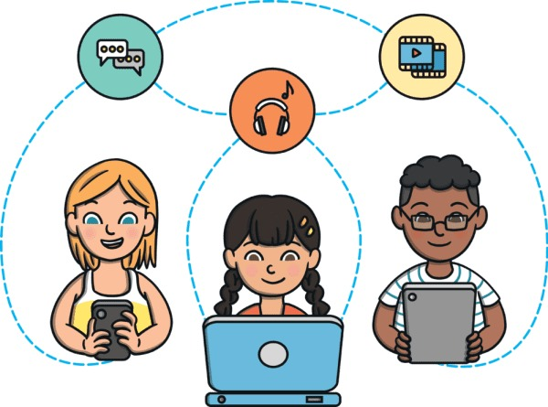
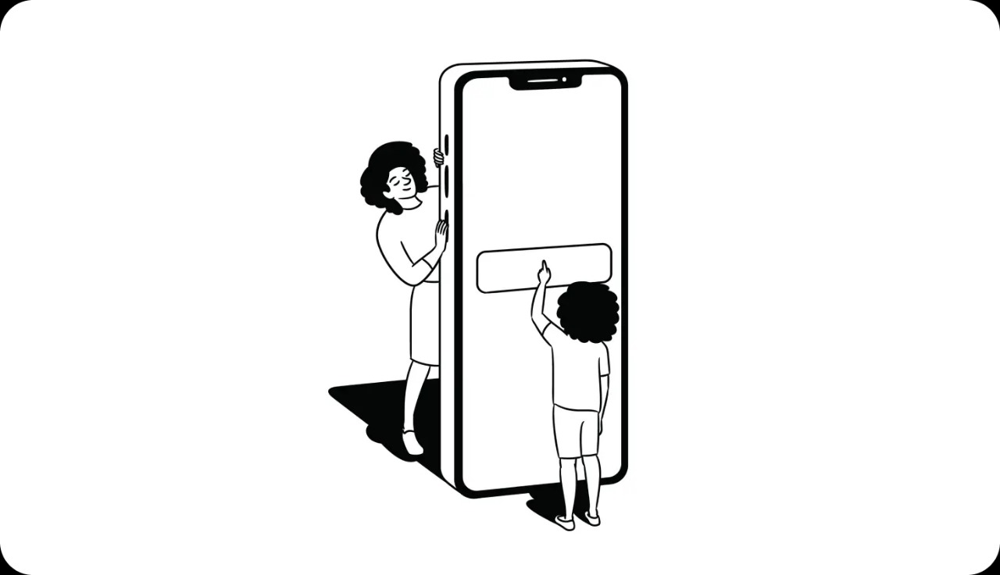

Day 22
Hello and welcome! In today's digital landscape, children have access to a vast array of information and entertainment. While this is incredibly exciting, it also comes with the responsibility of ensuring their online safety. After all, we want our young explorers to navigate the internet with confidence and security!
This One-Day Challenge will guide you through setting up parental controls on various devices and platforms. By taking these steps, you’ll create a safer online environment for your kids, allowing them to enjoy the wonders of the internet while minimizing exposure to inappropriate content.
Are you ready to embark on this important journey? Let’s get started and make the digital world a safer place for our children!
By implementing parental controls, you're not just creating digital boundaries; you're opening up a world of opportunities for your children to explore the internet safely! Here are some fun and meaningful impacts:
Overall, these measures pave the way for a happier, healthier digital upbringing. With the right tools, your kids will not only feel safe but also become savvy internet navigators, equipped with the skills to make smart choices. So, let’s gear up and embark on this journey together!
